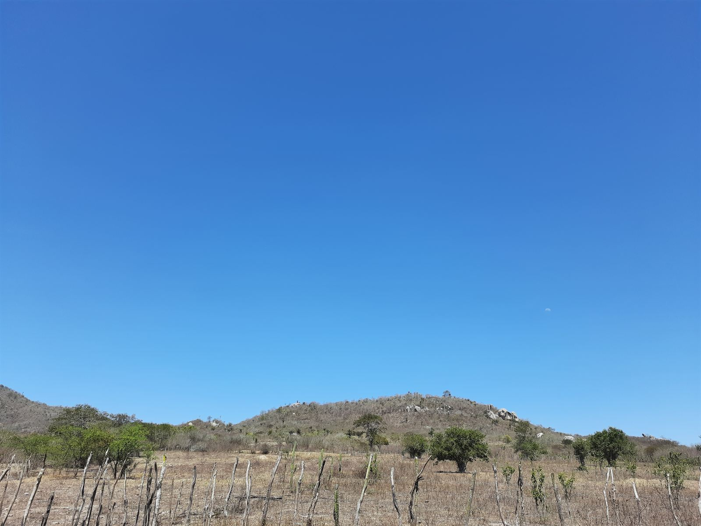
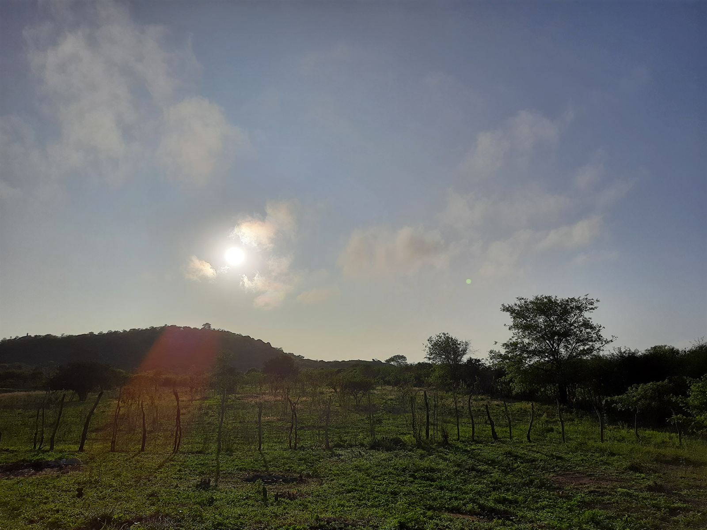
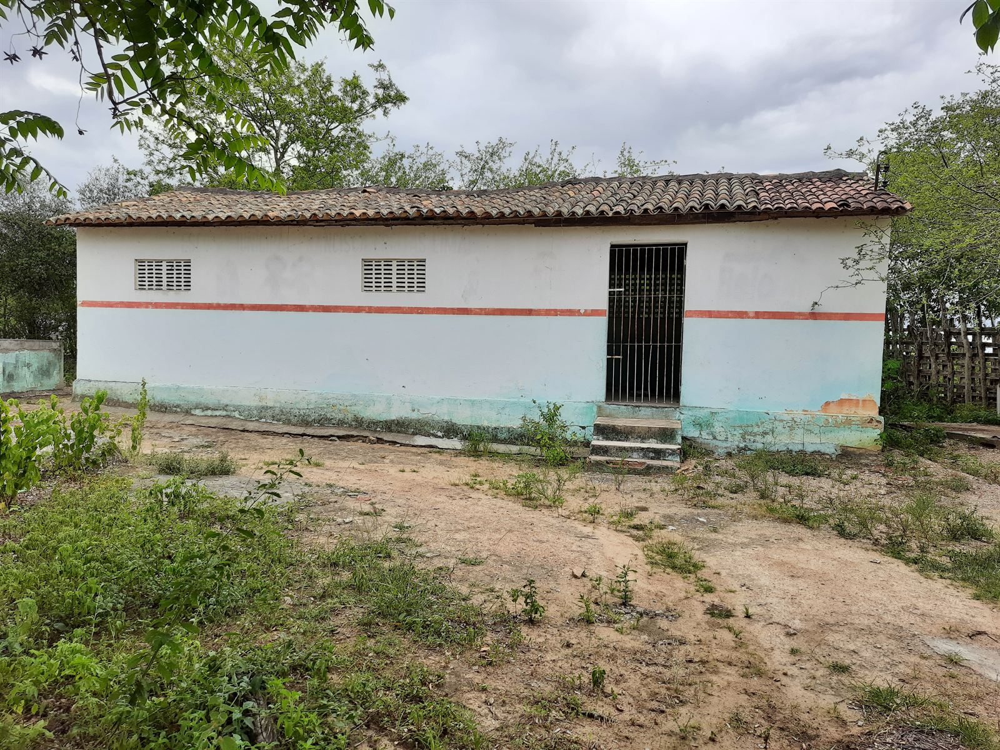

I build intelligent systems that connect economics, data, and AI.
Economist and AI engineer. I build tools, research and products that turn data into clear decisions and real-world impact — from fixed income and markets to LLM-powered systems.
View selected workSkill
-
Data & Analytics
Transforming data into insights.
-
Economics & Markets
Markets, fixed income and economic analysis.
-
Software Engineering
Building tools and scalable systems.
-
AI & LLMs
Intelligent systems, agents and applied AI.
-
Product & Design
Turning ideas into useful products.
-
Communication
Clear thinking and structured ideas.
Reading & Learning
Challenges, courses, research and university work — the path behind the projects.
Selected Projects
A curated collection of tools, analyses and products built at the intersection of data, markets and technology.
Exploring ideas that connect markets, technology and people.
My path runs through economics, technology, data, artificial intelligence and product building. I am interested in understanding how the world works and in building tools that help people make better decisions. This space gathers my trajectory, my interests and what I have been exploring in recent years.
-


Where it all began
I was born in São Paulo, the son of Josival, known to everyone as Vavá, and Maria de Lourdes, two northeasterners who learned early what work and perseverance mean. My father spent many years as a bricklayer in construction, while my mother devoted herself to our home and family.
After almost twenty years in São Paulo, we moved back to the countryside of Pernambuco. I was about eight years old. It was there, far from the city where I was born, that a good part of my story began to take shape.
-

The first leap
My early schooling happened in a small school in the rural area where we lived, and later in a municipal school nearby. Towards the end of that period I began to understand that going further would mean putting myself in places that still felt far from my reality.
So I decided to prepare for IFPE, the Federal Institute of Pernambuco. I had little beyond willingness, curiosity and courage, but at that moment it was enough: I passed the entrance exam for one of the most competitive technology programmes.
What I found there was a structure and a universe entirely new to me. The boy who arrived without even knowing how to turn on a computer was, a few months later, helping other students in the programming-logic classes.
With time I started to stand out, winning competitions and becoming one of the best students in my class. The next leap, just as demanding, no longer looked as distant as the first. This time I counted not only on courage and willingness, but on a few books, good teachers and the confidence of someone who had already discovered he could go further.
The next stop would be the University of São Paulo, where I went to study Economics.
-
Widening the lens
Arriving at the University of São Paulo was another important step. If before the challenge had been reaching opportunities that seemed out of reach, now it was making the most of the ones I had earned.
I kept dedicating myself to my studies, taking part in competitions, winning awards and getting involved in research. Beyond the results, though, the university gave me something far more valuable: the chance to explore new fields of knowledge and broaden the way I understand the world.
It was in this period that my interests started to reach past the limits of Economics. Technology, programming and data analysis stayed with me, now joined by new questions about human behaviour, markets and society.
Little by little I realised I did not have to choose between these interests. On the contrary: it was precisely in the connection between them that I found some of the most interesting questions to investigate.
-
Today
I currently work as a quantitative analyst at Tullett Prebon, a British interdealer broker, where economics, data, software and AI meet every day.
Economics × Data × Software × AI.
Have an idea worth building?
I am open to conversations about research, products and collaborations where economics, data and AI meet.
Let's talk